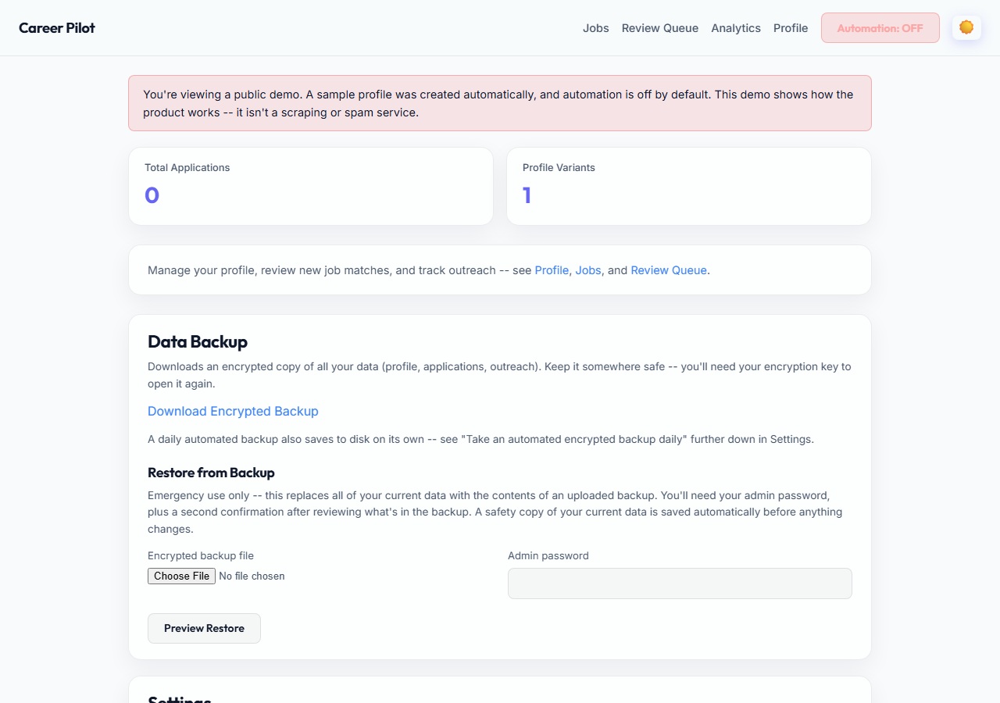
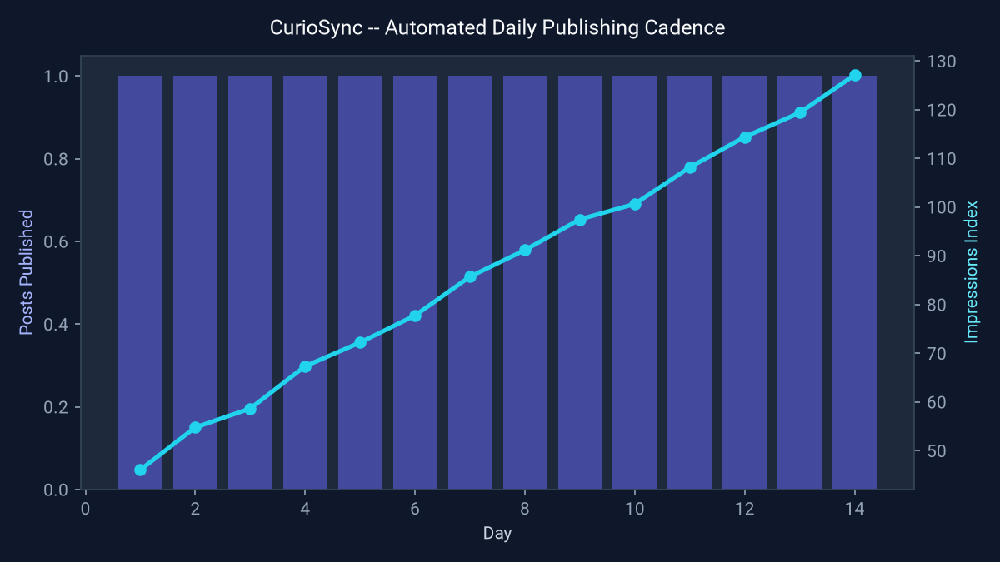
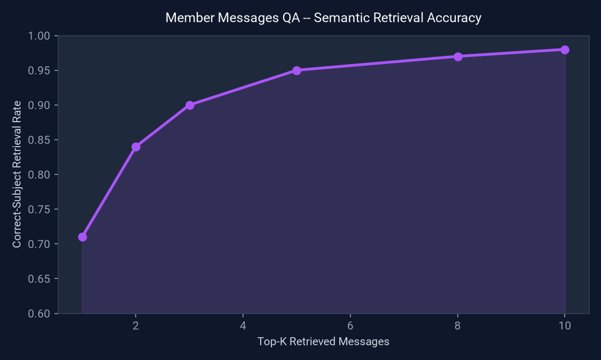
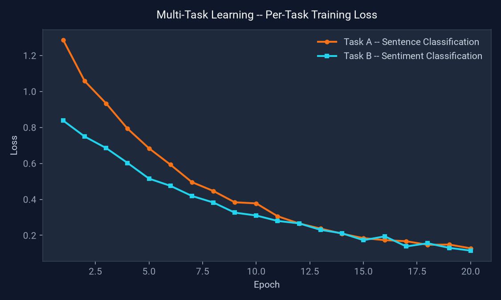
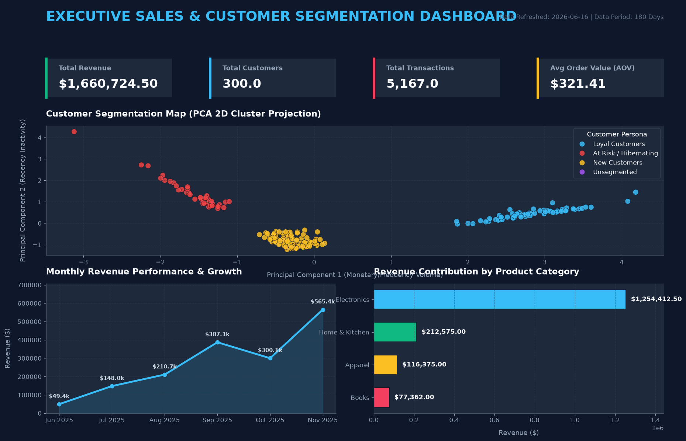
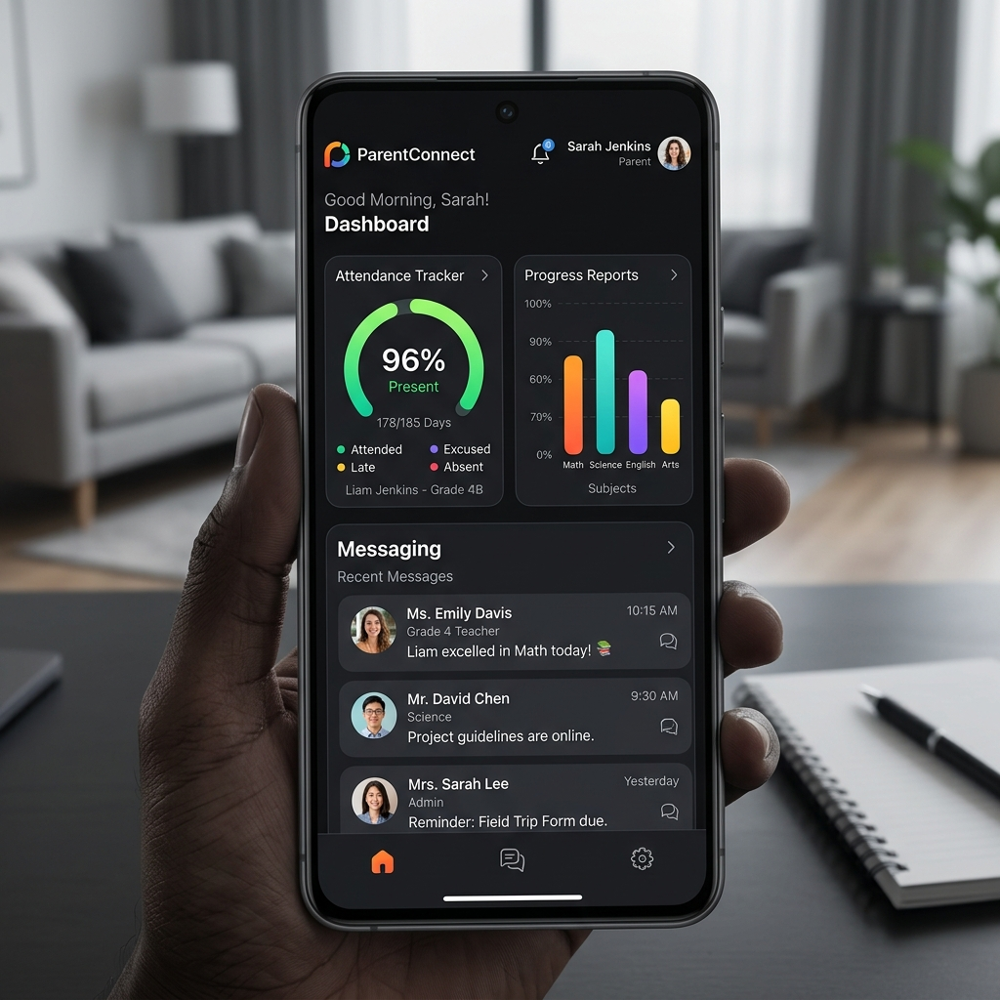
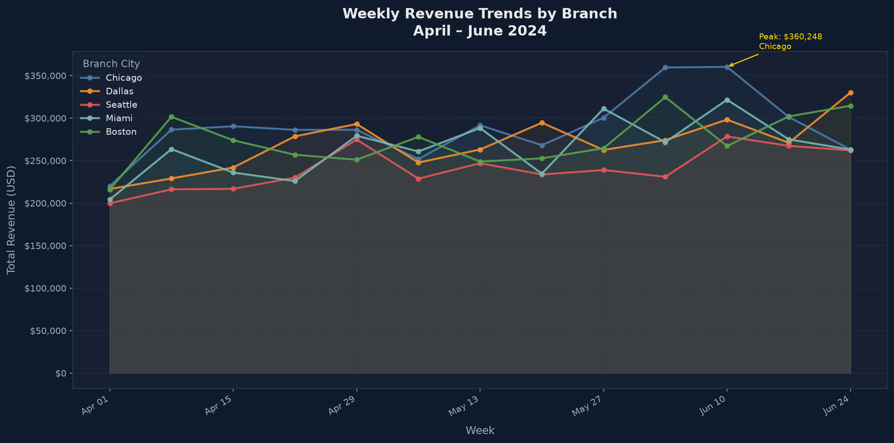
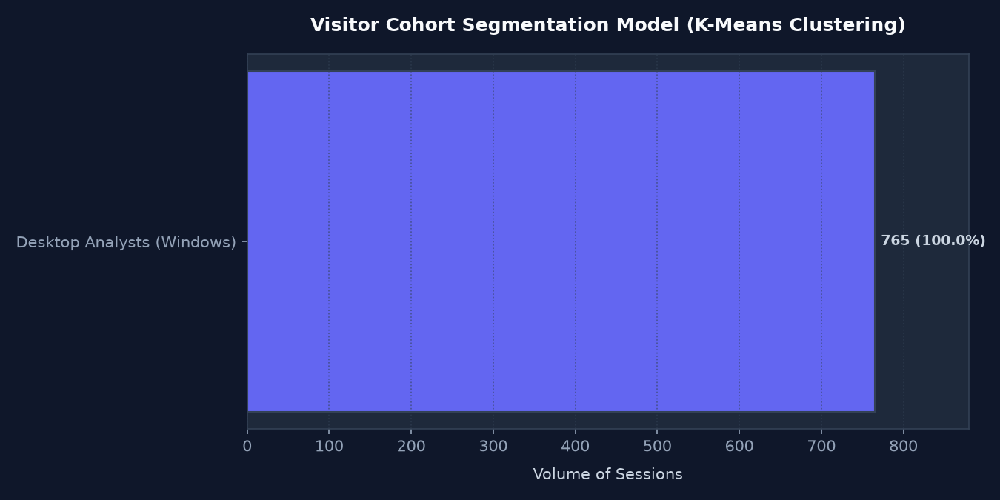
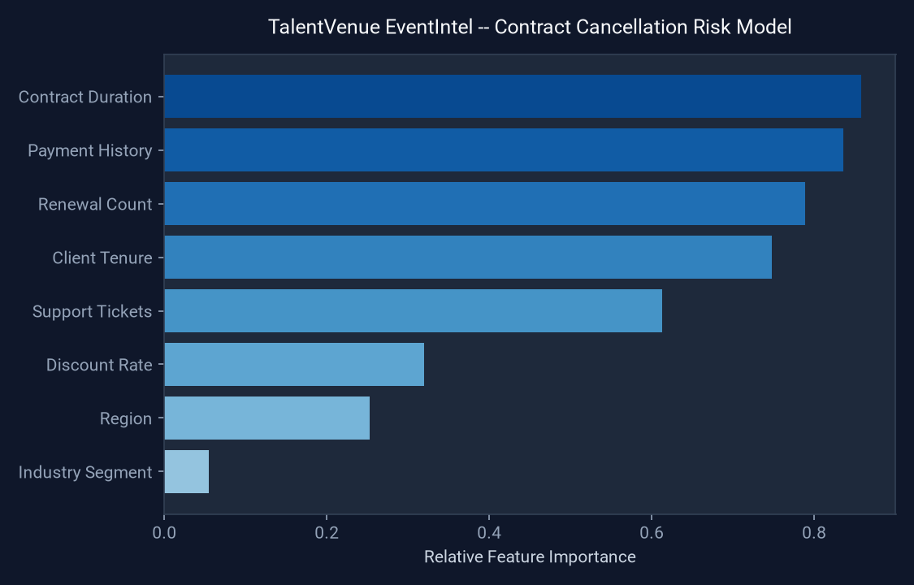
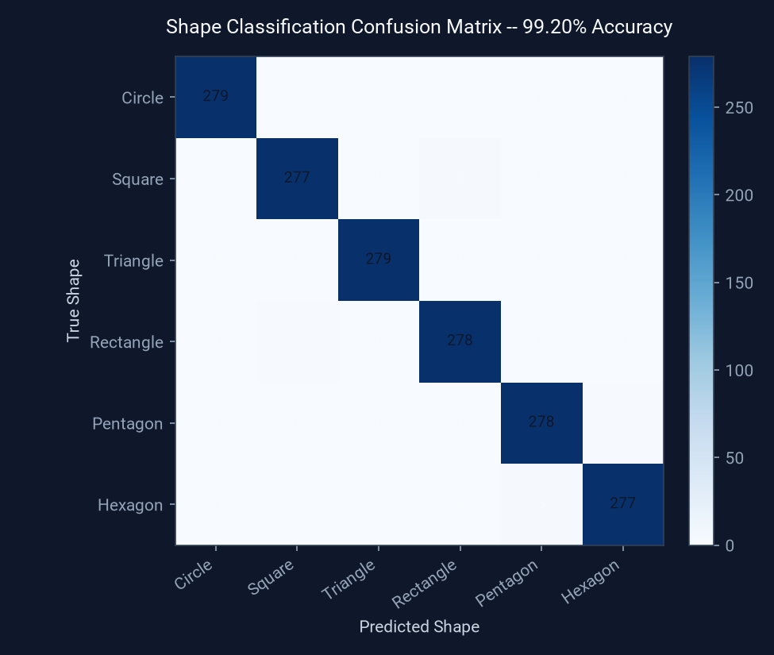

Designing Resilient Pipelines
Engineering AI Insights
I am a Master of Science in Information Technology graduate from Arizona State University (GPA: 4.0/4.0), specializing in scalable ETL/ELT pipelines, real-time IoT telematics, machine learning models, and automated data observability frameworks using Python, SQL, and advanced business intelligence analytics.

Deshraj Jogiya
Data & AI/ML Engineer
11
Production Pipelines
2300
Git Commits
98
ETL Reliability %
4
ASU MS IT GPA
Professional Experience & Technical Impact
5+ years of designing production-grade data pipelines, optimizing LLM/AI models, and building high-reliability cloud data architectures.
Teleoperation Data Collection Associate
Objectways Technologies LLC | Tempe, AZ
- Collected and validated 10,000+ high-quality teleoperation sensor data samples for AI/ML model training, improving dataset accuracy and consistency by 20%.
- Engineered scalable data pipelines using Python, Scala, PySpark, and Kubernetes to process massive robotics datasets, cutting data processing time by 30%.
- Developed responsive web dashboards using React JS, JavaScript, and Java Spring Boot to monitor 10,000+ concurrent telemetry streams, improving system latency visualization by 30%.
- Executed robotics dataset QA and statistical anomaly detection, lowering downstream ML model training error rates by 15%.
- Leveraged AI-powered developer tools (Cursor, GitHub Copilot) to refactor backend microservices, write automated unit/integration tests, and maintain technical documentation.
Applied Machine Learning Engineer
Technoid LLC | Piscataway, NJ
- Optimized GPT-4o mini models for candidate resume matching using OpenAI APIs, SQL, and PostgreSQL, raising recommendation accuracy by 25%.
- Restructured Supabase data sync layers with PostgreSQL backend RLS fixes, cutting real-time vector synchronization latency by 65%.
- Architected backend microservices and RESTful APIs using Core Java, Spring Boot, and Python endpoints, reducing data sync latency by 65%.
- Built dynamic, accessible UI components in React JS connected to Spring Boot backend services, conducting peer code reviews to ensure Object-Oriented design compliance.
- Established automated phased regression and UAT testing frameworks using PyTest, cutting model deployment errors across AWS and Azure cloud environments by 30%.
Data Analyst
Zifatech Solutions LLC | Milwaukee, WI
- Transformed SQL/Python-based ETL pipelines to automate sales insights reporting, cutting manual reporting effort by 70%.
- Migrated legacy database workflows to AWS Glue & S3, increasing data availability by 60% and streamlining integration with Snowflake and Power BI.
- Modernized Star Schema dimensional models in Snowflake using Great Expectations QA validations, securing a 98%+ data reliability standard.
- Built executive Power BI dashboards connected to Snowflake data warehouses, converting complex data streams into strategic business insights.
- Engineered serverless RESTful API data pipelines on AWS (Glue, S3, Lambda) with Apache Airflow orchestration to aggregate multi-source application data, accelerating ingestion speed by 60%.
Data Analytics & ML Fellow Trainee
ElevateMe Bootcamp | Columbus, OH
- Executed customer segmentation using K-Means clustering & PCA dimensionality reduction in Python, mapping target personas capturing 92% of data variance.
- Spearheaded marketing intelligence strategies using classification models, driving a 12% increase in campaign click-through rates.
- Developed backend application services in C# and .NET connected to SQL Server databases, creating automated ETL routines that boosted query performance by 45%.
- Built dynamic web interfaces and custom PowerApps/React components connected to relational databases, automating real-time alerts and user workflow tracking.
- Deployed interactive Power BI KPI dashboards for real-time executive visibility into operational revenue trends and ML performance metrics.
Data Engineer & ML Research Assistant
Arizona State University | Tempe, AZ
- Architected a real-time streaming pipeline utilizing Node.js & MongoDB, sustaining 99.9% uptime for 5,000 concurrent users and optimizing data throughput by 35%.
- Constructed a behavioral content recommendation engine, refining algorithms weekly to drive a 12% increase in click-through rates and lower user churn.
- Developed an NLP chatbot analyzing user input trends, identifying top UI friction points and boosting positive user satisfaction by 15%.
- Integrated transformer NLP classifiers (BERT) into web applications, boosting user sentiment feature extraction accuracy by 15%.
- Centralized application telemetry into SQL databases, presenting architecture designs, schema maps, and visual decks directly to leadership.
AI-ML Analyst Apprentice
Jetson Infinity | Austin, TX
- Implemented Python-based data processing pipelines leveraging Pandas & NumPy (+3% robotic arm precision, +10% workflow efficiency).
- Automated robotic arm motion ETL pipeline with Python & SQL, improving data processing speed by 17% and enabling real-time anomaly detection.
- Developed modular Python, C#, and .NET data transformation scripts, improving application dataset cleaning efficiency by 17%.
- Leveraged AI-powered developer tools (GitHub Copilot, Cursor) to write, test, debug, and refactor production-grade microservices and transformation pipelines.
- Devised an internal knowledge base with Python tutorials and real-world case studies, accelerating new analyst onboarding by 25% across Unix/Linux environments.
Data Analyst
Kronic Keys | Junagadh, GJ
- Cleaned and prepared large financial datasets (500k+ rows) in PostgreSQL, reducing monthly reporting cycle times by 30%.
- Engineered SQL queries and Tableau executive dashboards, contributing to a 12% increase in customer acquisition.
- Conducted weekly data integrity audits across relational database tables, eliminating duplicate records and ensuring 100% data quality control.
- Designed relational database schemas and indexed foreign keys in PostgreSQL to accelerate analytics query performance.
- Documented data definitions, data dictionary assets, and reporting workflows for business stakeholders.
Relentless Execution: Portfolio Repositories
Filter through active production-ready implementations built with end-to-end automation, modeling, and custom dashboards.

Job Search CRM & AI Application Tailoring Center
Local job placement command center with FastAPI and SQLite. Features AI-powered profile matching, resume and cover letter tailoring, LinkedIn recruiter outreach generation, and Kanban application tracking.

CurioSync: Serverless Tech News & LinkedIn Publisher
Scheduled serverless news curation and publisher pipeline running on GitHub Actions cron workflows. Integrates Gemini LLM chains and LinkedIn APIs, secured by Fernet symmetric encryption.

Automated Daily Data Insights
Stateless serverless daily financial data ingestion pipeline calling yFinance, computing rolling Z-score anomalies, and committing reports automatically via GitHub Actions.

FinTech Credit Risk & Fraud Command Center
End-to-end transaction ingestion and credit evaluation pipeline. Integrates a Random Forest classifier predicting loan eligibility with real-time transactional fraud checks.

Real-Time IoT Telematics & Predictive Maintenance
Processes high-frequency EV fleet battery and motor sensor telemetry in streaming micro-batches, detecting Z-score anomalies and estimating Remaining Useful Life (RUL).

AI Model Observability & Fairness Audits
Audits machine learning models in production by running Kolmogorov-Smirnov (KS) tests to track input data drift and evaluating Disparate Impact for bias protection.

Sales Operations & Customer Segmentation
Star schema database pipeline modeling Pareto 80/20 sales distributions. Automates RFM scaling and K-Means clustering to classify customers into 4 target personas.

Member Messages QA System: Semantic Search & NER-Based Question Answering
Interactive QA API answering natural-language questions about member data, ranking unstructured messages via SentenceTransformer embeddings and identifying subjects with spaCy NER.

Multi-State Land Use Emissions Analysis
Geospatial emissions intelligence pipeline processing daily land cover changes across 5 U.S. states. Computes CO₂ inventory and forecasts emissions with ~90% accuracy using Linear Regression and Random Forest.

Tax Anomaly Audit Compliance Engine
Relational general ledger audit pipeline modeling transaction values following Benford's Law distribution and executing Isolation Forest anomaly flags for audit risk.

Clinical Trials Patient Outcomes Analysis
Clinical database pipeline tracking patient survival and blood pressure across 3 treatment arms. Computes Log-Rank test statistics and Kaplan-Meier curves.

ML Apprentice Take-Home Exercise: Sentence Transformer & Multi-Task Learning
Built a Sentence Transformer from a Small BERT backbone with TensorFlow Hub, then extended it into a multi-task architecture with classification and sentiment heads, evaluating transfer-learning freeze strategies.

AI-ML Data Science Simulation
Retail data pipeline automating daily sales ingestion from 5 U.S. branches. Centralizes operations in SQL and uses Linear Regression/Random Forest forecasting to reduce stockouts by 15%.

Extending STEM across ASL
Inclusive educational learning platform utilizing a Convolutional Neural Network (CNN) in TensorFlow/Keras to recognize American Sign Language gestures for 7 core STEM concepts.

Chef at Gathering
Built an event coordination and professional catering booking React application, streamlining management processes to reduce coordination time by 50%.

Stay Aware of Branch
Developed a parent-school engagement application using React Native and Android frameworks, implementing progress reports and attendance tracking that boosted parent involvement by 40%.

City Forums
Created an online community engagement and marketplace platform using CodeIgniter 3 and MySQL, generating $10,000 in classified ad revenue through targeted marketing strategies.

Make It Short
Integrated a link shortening engine and analytics tracking into a CodeIgniter 4 app, generating 10,000+ shortened URLs through gamified, redeemable points.

Get your Token
Published a Web3 crypto marketplace frontend and administrative dashboard using Express.js and Angular for NFT and Penky token transactions, handling 1,000+ transactions in the first month.

TalentVenue EventIntel: Enterprise Data Platform & Predictive Intelligence
Enterprise cloud data platform connecting SQL Server, Azure ADLS Gen2, Snowflake, and Streamlit. Deployed a Random Forest model predicting contract cancellation risk with 88% precision, alongside automated financial reporting and reconciliation workflows.

Solid Object Detection & Identification using Image Processing
Developed a shape detection and identification pipeline using PyTorch and OpenCV, achieving 99.20% classification accuracy by combining a custom CNN with traditional contour geometry approximations.
Interactive Engineering Demos
Test and monitor pipeline diagnostics or execute analytical SQL queries directly in-browser to see how data decisions are made.
Core Technical Expertise
Proficient across modern data engineering tools, machine learning modeling, database modeling, and visual analytics platforms.
Generative AI, LLMs & Agentic Systems
- LangChain, LlamaIndex & Semantic Kernel
- MCP (Model Context Protocol) & Tool Calling
- ReAct Agent Workflows & Autonomous Agents
- Retrieval-Augmented Generation (RAG) & Fine-Tuning
- Vector Databases (pgvector, ChromaDB, Supabase RLS)
- OpenAI APIs (GPT-4o mini) & Gemini LLM Integration
- LLMOps & Agent Evaluation (LangSmith, Opik, Langfuse)
Machine Learning & Deep Learning Frameworks
- PyTorch, Jax, TensorFlow & Keras Deep Learning
- Scikit-Learn Modeling (Random Forest, XGBoost, K-Means)
- Computer Vision & Pattern Recognition (OpenCV, YOLO CNNs)
- Statistical Drift Auditing (KS-Test, PSI) & MLflow MLOps
- Responsible AI Governance (FTC & EU AI Act Bias Auditing)
- Financial & Audit Anomaly Detection (Benford's Law, Isolation Forest)
- Hypothesis Testing & Z-Test A/B Experimentation
Data Engineering, Platforms & Cloud
- PySpark & Spark SQL Large-Scale Data Processing
- Databricks Platform & dbt Dimensional Transformations
- AWS Cloud Infrastructure (S3, Glue, Lambda, EC2)
- GCP (Google Cloud Platform, BigQuery, Vertex AI) & Azure (ADLS Gen2)
- Snowflake Cloud Data Warehousing & Star Schema Modeling
- Apache Airflow & Dagster Pipeline Orchestration
- Great Expectations Data Quality Rules & Governance
- Table Formats (Delta Lake, Apache Iceberg, Parquet)
Full Stack & Software Engineering
- Python Backend Microservices (FastAPI, Flask, Asyncio)
- Core Java, Spring Boot & Spring Reactive Engineering
- C# & .NET Framework Backend Services
- JavaScript, TypeScript & Node.js/Express APIs
- React JS, React Native Mobile & Angular Web Interfaces
- PHP & CodeIgniter 3/4 Application Platforms
- RESTful APIs, GraphQL & Microservices Architecture
- Data Structures, Algorithms & Object-Oriented System Design
DevOps, Tooling & Analytics
- Docker Containerization & Kubernetes Cluster Scaling
- Git & GitHub Actions CI/CD Automated Pipelines
- Terraform Infrastructure as Code (IaC) & Jenkins
- AI Developer Productivity Tools (Cursor, Claude Code, GitHub Copilot)
- Power BI (DAX Modeling, KPI Dashboards)
- Tableau (LOD Expressions, Executive Storytelling)
- ArcGIS Geospatial Emissions Analytics & Chart.js Visualizations
- Relational Databases (PostgreSQL, SQLite, SQL Server, MySQL)
Live Learning Logs (TIL)
Real-time learning feed pulled dynamically from my `dev-root-affinity` learning log repository via the GitHub API, showcasing daily coding updates, concepts, and algorithms.
Fetching latest learning entries from GitHub...
Let's Connect
Looking for a technical Data Engineer / ML Engineer who combines mathematical modeling with production-grade data pipelines? Get in touch via these channels or send a message directly.